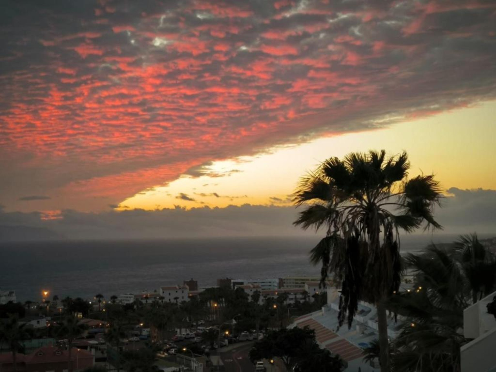
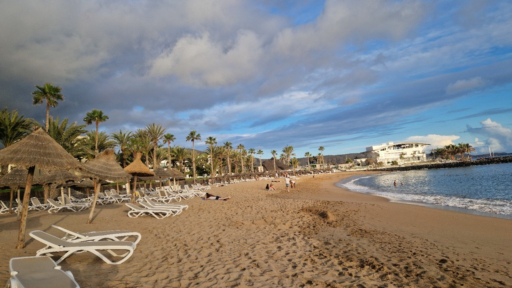

Africa and the West, in the Same Light
A street, an ocean, and the feeling that Tenerife belongs to more than one world.
Read the storyOriginal stories, quiet discoveries and a more personal way to experience the island — written from Los Cristianos and beyond.
A street, an ocean, and the feeling that Tenerife belongs to more than one world.
Read the story
A personal story about returning to Tenerife — and how a holiday gradually became a place, a decision and a story.
Read the story
Los Cristianos before the town wakes: an early walk from Port Royale towards the promenade and the Atlantic.
Read the storyFruit, colour, and simple gestures in a place that says more about the island than many tourist attractions.
Read the storyMore original stories from Tenerife will be added here over time.